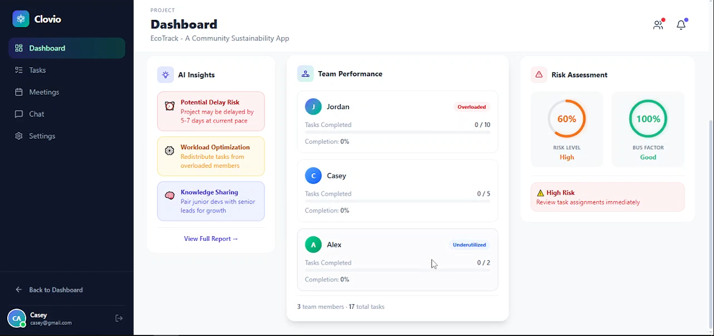
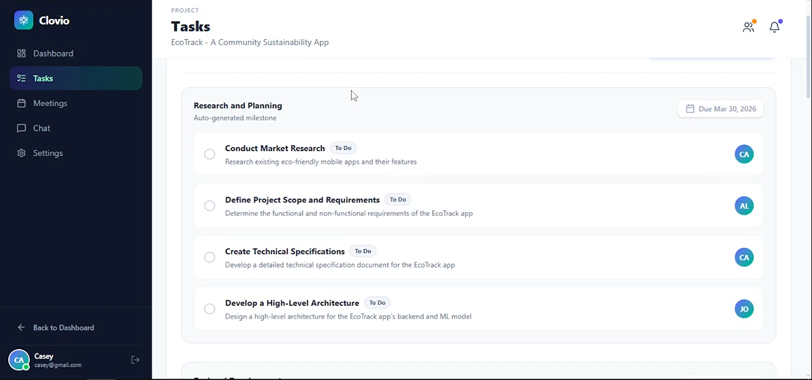

Clovio
AI Collaboration PlatformClovio is an intelligent collaboration platform that transforms academic group projects by ensuring fairness, efficiency, and accountability. Using AI, it breaks down project descriptions into milestones and tasks, assigns work based on skills, and provides fairness scores with live progress visibility.
Contribution: Built the backend and AI implementation, handled frontend and backend deployment, and developed progress prediction and fairness scoring features.


Backend: FastAPI, SQLAlchemy, Alembic, PostgreSQL
Frontend: React, TypeScript, Tailwind CSS, React Router, Axios
AI: OpenRouter primary, Groq (Llama 3.3) fallback
Auth: JWT (python-jose), bcrypt
DevOps: Railway/Render, Vercel, GitHub Actions